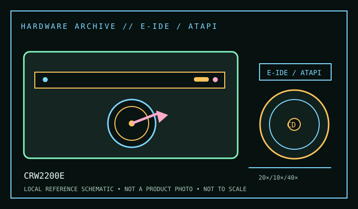

[ CD-R AND CD-RW DRIVES // IDENTIFIED MODEL ]
Yamaha CRW2200E
Internal E-IDE/ATAPI CD-R/RW recorder rated at 20× CD-R, 10× CD-RW and 40× read. This is the “E” internal IDE model; the related external “SX” unit has a different host connection.

IDENTIFICATION: Confirm the manufacturer label, complete model suffix, interface and firmware revision against the cited manual before installation or archival use. Ratings are maximums; actual performance depends on media, mode, host and software.
Documented specifications
| Subcategory | CD-R and CD-RW drives |
|---|---|
| Exact model | CRW2200E |
| CD-R write | 20× |
| CD-RW rewrite | 10× |
| CD-ROM / CD read | 40× |
| Recorded/read formats | Records CD-R and CD-RW; reads CD-ROM and standard compact-disc audio/data formats. Supported recording media include 12 cm and 8 cm CD-R/RW where the disc and tray are compatible; avoid assuming every nonstandard or copy-protected disc is supported. |
| Recording modes | Disc-at-Once, Track-at-Once, Session-at-Once and packet writing; MultiRead support is described in the model manual. Authoring application and media determine which modes are usable. |
| Interface / mechanics | Internal E-IDE/ATAPI, 5.25-inch half-height. Connect to a compatible ATA channel; set the device position and cable per the Yamaha installation instructions. |
| Host and operating-system compatibility | Requires an ATAPI-capable host, operating-system optical driver and recording application. Period Yamaha software targets legacy desktop OS releases; on newer systems verify the software separately. Interface visibility alone does not establish support for old packet-writing or audio applications. |
| Firmware / revision notes | Use only CRW2200E firmware matched to the exact revision/region; do not apply CRW2200SX or CRW2200S images. Yamaha’s manual treats maximum rates as media/mode dependent; record firmware and media type when benchmarking or preserving a burn. |
Compatibility & preservation notes
- Requires an ATAPI-capable host, operating-system optical driver and recording application. Period Yamaha software targets legacy desktop OS releases; on newer systems verify the software separately. Interface visibility alone does not establish support for old packet-writing or audio applications.
- Use only CRW2200E firmware matched to the exact revision/region; do not apply CRW2200SX or CRW2200S images. Yamaha’s manual treats maximum rates as media/mode dependent; record firmware and media type when benchmarking or preserving a burn.
- For an imaging or recording session, log the exact drive and firmware, interface/controller, operating system, application version, media identifier, selected mode and any read/verification errors. Keep checksummed image copies and logs.
- Handle discs at the edge or center hole and store in cases in a cool, dry place away from direct sunlight. Avoid adhesive labels, abrasive cleaning and undocumented solvents or polishing.
Read support is not write support. A format listed for this drive does not guarantee every disc revision or copy-protection scheme will work.
Sources
- Yamaha CRW2200E Series owner’s manual, ManualsLib archivePeriod owner’s manual covering setup, supported media, operating modes and technical data. Confirm the exact “E” model suffix.
- Yamaha CRW2200E user manual, ManualsLib archiveSecond archived manual record for the E model; consult its specification and installation sections.
- Library of Congress — CD-R and DVD-R/RW longevityArchival recordable-media care guidance, not a drive rating.